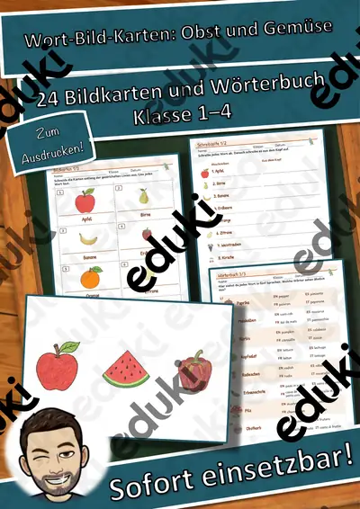
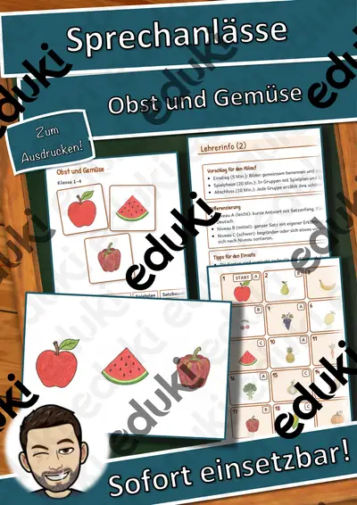
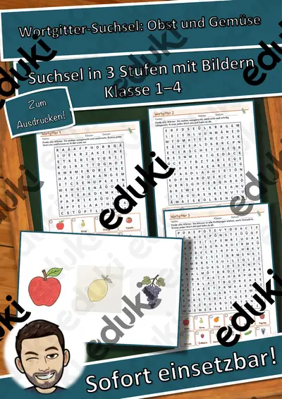
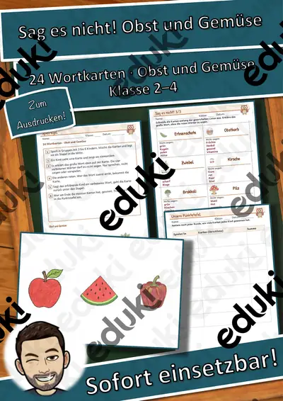

Gemüse - Merk es dir!
KostenlosMaterial auf eduki ansehen
Mit diesem Material erhalten Sie das Gemüse Merk es dir! mit 15 verschiedenen Gemüsebildern (insgesamt 30 Karten). Viel Spaß beim Spielen! Über eine kleinen Beitrag für meine Kaffeekasse freue ich mich sehr: :) https://www.paypal.com/cgi-bin/webscr?cmd=_s-xclick&hosted_button_id=VQNS7ZDMJ83WY&source=url Danke!
FachSachunterricht
KlasseKl. 1–4
SchulformGrundschule
MaterialartSpiele
Ähnliche Materialien

Gemüse – Hörverstehen mit Lückentext (interaktiv)

Gemüse Lückentext mit Wortspeicher Hörverstehen und Suchsel

Einmaleins - Merk es dir! (kleines Einmaleins)

Wort-Bild-Karten: Obst und Gemüse – Wort-Bild-Karten – Klasse 1–4

Lesespaziergang: Obst und Gemüse im Winter – 3-fach differenziert (★/★★/★★★), Klasse 2–4

Sprechanlässe: Obst und Gemüse – Sprechanlässe – Klasse 1–4

Wortgitter-Suchsel: Obst und Gemüse – Wortgitter – Klasse 1–4
